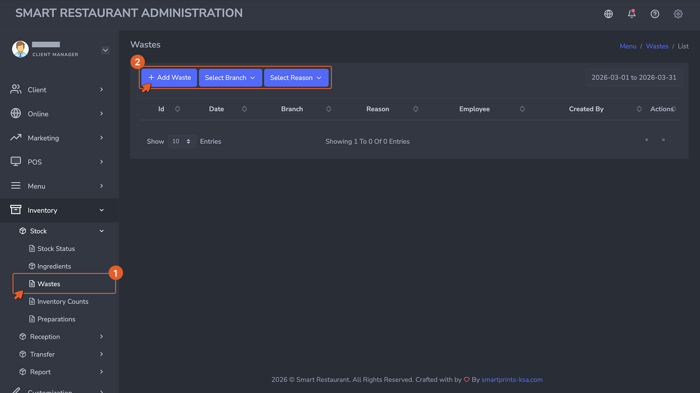
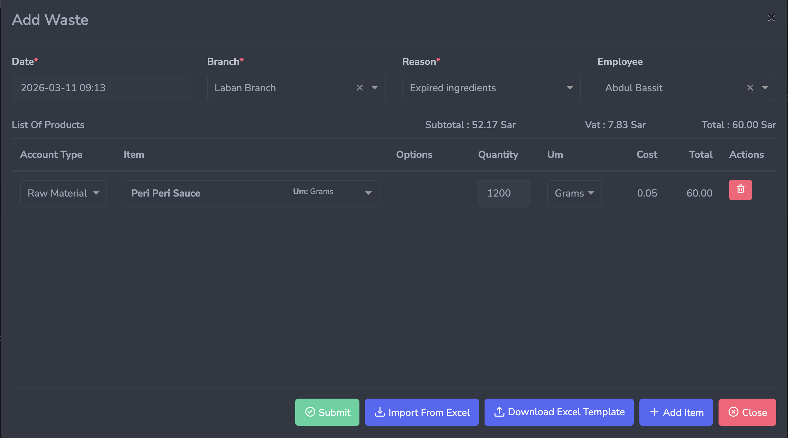
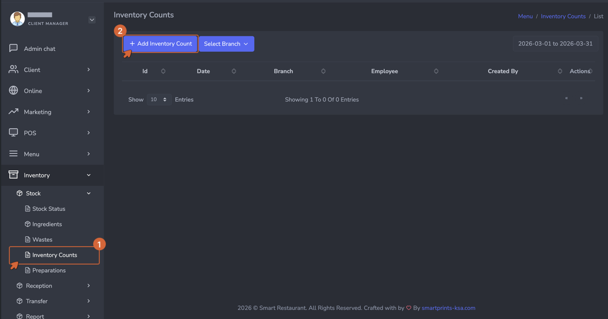
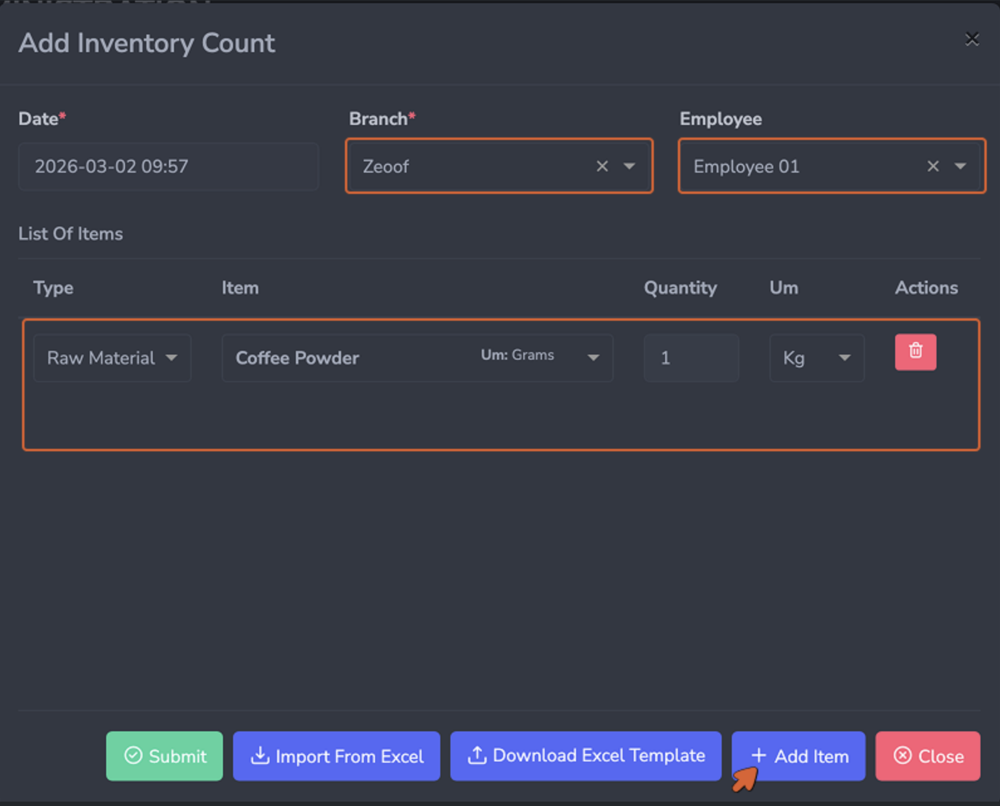
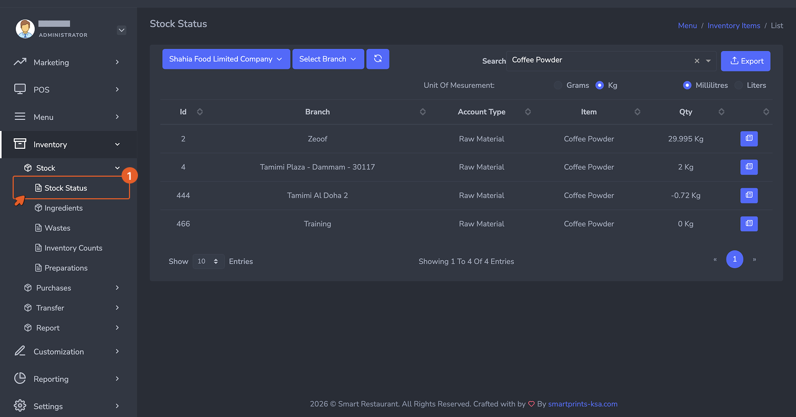
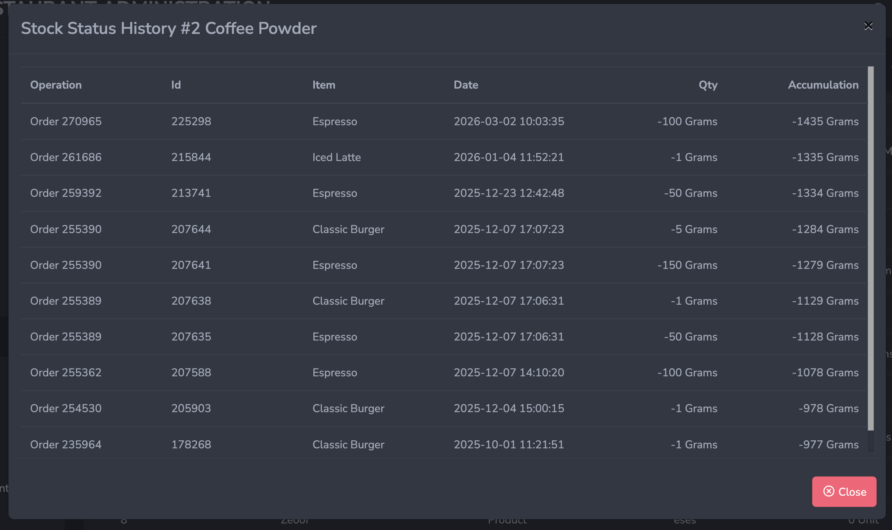

Waste Recording — Overview
تسجيل الهدر — نظرة عامة
Waste is any ingredient that is discarded without being sold.
Spoiled produce, a preparation batch that went wrong, an
ingredient dropped and unusable, food left over at end of day —
all of it is waste. Recording waste correctly is critical
because without it, the system assumes every gram of missing
stock was consumed through a sale. This overstates your sales
consumption, understates your actual waste costs, and makes your
food cost reports misleading.
الهدر هو أي مكون يُتخلَّص منه دون أن يُباع. المنتجات الفاسدة،
دفعة التحضير الفاشلة، المكون الذي سقط وأصبح غير صالح للاستخدام،
الطعام المتبقي في نهاية اليوم — كل ذلك يُعدّ هدراً. تسجيل الهدر
بشكل صحيح أمر بالغ الأهمية لأنه بدونه يفترض النظام أن كل جرام من
المخزون المفقود قد استُهلك من خلال عملية بيع. هذا يُبالغ في
استهلاك مبيعاتك، ويُقلِّل من تكاليف الهدر الفعلية، ويجعل تقارير
تكلفة الغذاء مضللة.
Waste can and should be recorded any time it occurs throughout
the day — not accumulated and entered at the end of the shift.
The closer to real time the entry is made, the more accurate
your waste data will be.
يمكن وينبغي تسجيل الهدر في أي وقت يحدث خلال اليوم — وليس تجميعه
وإدخاله في نهاية الوردية. كلما كان الإدخال أقرب للوقت الفعلي،
كانت بيانات الهدر أكثر دقة.
How to Access
كيفية الوصول
Navigate to
Inventory → Stock → Wastes, then
click + Add to open the waste entry form.
انتقل إلى المخزون ← المخزون ← الهدر،
ثم انقر على + إضافة لفتح نموذج إدخال الهدر.

The Wastes list view. Every recorded waste entry appears here
with its reason, cost impact, and the employee who logged it.
عرض قائمة الهدر. تظهر هنا كل إدخالات الهدر المسجَّلة مع سببها
وتأثيرها على التكلفة والموظف الذي سجَّلها.
The Waste Form — Field by Field
نموذج الهدر — حقل بحقل

The Waste form. Select a reason code first, then add each
wasted ingredient with its quantity. The system calculates the
cost impact automatically.
نموذج الهدر. اختر رمز السبب أولاً، ثم أضف كل مكون مُهدَر
بكميته. يحسب النظام تأثير التكلفة تلقائياً.
-
Date (Required): The date and time the waste
occurred. Auto-populated but editable. Record the actual time
of the waste event, not the time of data entry if they differ.
-
Branch (Required): The branch where the waste
occurred. Stock will be deducted from this branch's inventory.
-
Reason (Required): A predefined reason code
explaining why the waste occurred. Common reason codes include
Spoilage, Overproduction, Preparation Error, Expiry, and
Breakage. A set of predefined reasons is provided but can be
updated — contact support to make changes.
-
Employee (Optional): The staff member
reporting the waste. Assigning an employee creates
accountability and makes it easier to follow up on recurring
waste patterns.
-
List of Items: Each wasted ingredient is
added as a line with Type (Raw Material or Product), Item,
Quantity, Unit, Cost (pulled automatically), and Total Cost.
The form shows a running Subtotal, VAT, and Total as items are
added. Click + Add Item to add multiple
entries, or use the Excel import for bulk waste entries.
-
التاريخ (مطلوب): تاريخ ووقت حدوث الهدر. يُملأ
تلقائياً ولكن قابل للتعديل. سجِّل الوقت الفعلي لحدث الهدر وليس
وقت إدخال البيانات إذا اختلفا.
-
الفرع (مطلوب): الفرع الذي حدث فيه الهدر.
سيُخصَم المخزون من مخزون هذا الفرع.
-
السبب (مطلوب): رمز سبب محدد مسبقاً يشرح سبب
حدوث الهدر. تشمل رموز الأسباب الشائعة: التلف، والإنتاج الزائد،
وخطأ التحضير، وانتهاء الصلاحية، والكسر. يتوفر مجموعة من
الأسباب المحددة مسبقاً ولكن يمكن تحديثها — تواصل مع الدعم
لإجراء التغييرات.
-
الموظف (اختياري): الموظف الذي يُبلِّغ عن
الهدر. تعيين موظف يُنشئ مساءلة ويُسهِّل متابعة أنماط الهدر
المتكررة.
-
قائمة الأصناف: يُضاف كل مكون مُهدَر كسطر
يحتوي على النوع (مادة خام أو منتج)، الصنف، الكمية، الوحدة،
التكلفة (تُسحب تلقائياً)، والتكلفة الإجمالية. يُظهر النموذج
المجموع الجاري والضريبة والإجمالي مع إضافة الأصناف. انقر على
+ إضافة صنف لإضافة إدخالات متعددة، أو استخدم
استيراد Excel لإدخالات الهدر الجماعية.
Submitting the Waste Entry
إرسال إدخال الهدر
Click Submit to save the entry. Stock levels
for all listed ingredients decrease immediately at the selected
branch. The waste is recorded in the Waste Report with its
reason code, cost, and timestamp.
انقر على إرسال لحفظ الإدخال. تنخفض مستويات
مخزون جميع المكونات المُدرَجة فوراً في الفرع المختار. يُسجَّل
الهدر في تقرير الهدر مع رمز السبب والتكلفة والطابع الزمني.
Tip:
نصيحة:
Train your kitchen team to log waste as it happens rather than
trying to remember quantities at end of shift. Small, frequent
entries throughout the day are more accurate than one large
reconstructed entry at closing time.
درِّب فريق المطبخ على تسجيل الهدر فور حدوثه بدلاً من محاولة
تذكر الكميات في نهاية الوردية. الإدخالات الصغيرة والمتكررة على
مدار اليوم أكثر دقة من إدخال واحد كبير مُعاد تكوينه وقت
الإغلاق.
Overview
نظرة عامة
Counts are how the system corrects for all the small
discrepancies that build up over time — measurement rounding,
unrecorded waste, delivery short-shipments, and so on. Regular
counts keep your stock data grounded in physical reality.
الجرد هو الطريقة التي يُصحِّح بها النظام جميع التناقضات الصغيرة
التي تتراكم بمرور الوقت — تقريب القياسات، والهدر غير المسجَّل،
ونقص التسليمات، وما إلى ذلك. يُبقي الجرد المنتظم بيانات مخزونك
مرتبطة بالواقع الفعلي.
How to Access
كيفية الوصول
Navigate to
Inventory → Stock → Inventory Counts,
then click + Add to open the count form.
انتقل إلى
المخزون ← المخزون ← جرد المخزون، ثم
انقر على + إضافة لفتح نموذج الجرد.

The Inventory Counts list. Every count is recorded here, tied
to a specific branch and date.
قائمة جرد المخزون. يُسجَّل هنا كل جرد، مرتبطاً بفرع وتاريخ
محددين.
The Inventory Count Form
نموذج جرد المخزون

The Inventory Count form. Add each physically counted
ingredient as a line with its actual measured quantity.
نموذج جرد المخزون. أضف كل مكون تم عدّه فعلياً كسطر بكميته
المقاسة الفعلية.
-
Date (Required): The date and time the
physical count was conducted.
-
Branch (Required): The branch being counted.
Each count is scoped to one branch.
-
Employee (Optional): The staff member
performing the count.
-
List of Items: Each counted ingredient is
added as a line with Type, Item, Unit of Measure, and
Quantity. Use + Add Item for individual
entries or use the Excel Template import for full counts
across all ingredients.
-
التاريخ (مطلوب): تاريخ ووقت إجراء الجرد
الفعلي.
-
الفرع (مطلوب): الفرع الذي يتم جرده. كل جرد
مقتصر على فرع واحد.
-
الموظف (اختياري): الموظف الذي يُجري الجرد.
-
قائمة الأصناف: يُضاف كل مكون تم عدّه كسطر
يحتوي على النوع، الصنف، وحدة القياس، والكمية. استخدم
+ إضافة صنف للإدخالات الفردية أو استخدم
استيراد قالب Excel للجرد الكامل عبر جميع المكونات.
When to Count
متى تُجري الجرد
-
Pre-shift counts are performed before the
kitchen opens to verify that starting stock matches
expectations before production begins. These are typically
partial counts focused on the highest-consumption ingredients.
-
Post-shift counts are performed after the
kitchen closes to capture end-of-day stock levels. Comparing
pre-shift and post-shift counts against sales consumption data
gives you a precise picture of where discrepancies occurred.
-
Scheduled full counts cover every trackable
ingredient across all storage areas. These are typically
weekly or monthly and are used for financial reporting and
purchasing planning.
-
Spot counts are unscheduled partial counts
triggered by a specific concern — a stock level that looks
unexpectedly low, a report anomaly, or a suspected discrepancy
in a specific category.
-
جرد ما قبل الوردية يُجرى قبل فتح المطبخ
للتحقق من أن المخزون الابتدائي يتوافق مع التوقعات قبل بدء
الإنتاج. عادةً ما تكون هذه جرود جزئية تركِّز على المكونات
الأعلى استهلاكاً.
-
جرد ما بعد الوردية يُجرى بعد إغلاق المطبخ
لتسجيل مستويات المخزون في نهاية اليوم. مقارنة جرود ما قبل وما
بعد الوردية ببيانات استهلاك المبيعات تمنحك صورة دقيقة عن مكان
حدوث التناقضات.
-
الجرد الكامل المجدوَل يغطي كل مكون قابل
للتتبع عبر جميع مناطق التخزين. عادةً ما يكون أسبوعياً أو
شهرياً ويُستخدم للتقارير المالية وتخطيط المشتريات.
-
الجرد الفجائي هو جرد جزئي غير مجدوَل يُثيره
قلق محدد — مستوى مخزون يبدو منخفضاً بشكل غير متوقع، أو شذوذ في
التقرير، أو تناقض مشتبه به في فئة معينة.
Interpreting Count Results
تفسير نتائج الجرد
After submitting a count, navigate to Stock Status to review the
updated quantities. A gap between expected and counted quantity
is called a variance. Small variances are normal and typically
reflect minor measurement differences. Large or consistent
variances in the same ingredient are signals worth
investigating.
بعد إرسال الجرد، انتقل إلى حالة المخزون لمراجعة الكميات
المحدَّثة. الفجوة بين الكمية المتوقعة والمعدودة تُسمى انحرافاً.
الانحرافات الصغيرة طبيعية وتعكس عادةً فروقات طفيفة في القياس.
الانحرافات الكبيرة أو المتسقة في نفس المكون هي إشارات تستحق
التحقيق.
Common causes include unrecorded waste, recipe portion drift,
supplier short-delivery not caught at reception, or theft.
الأسباب الشائعة تشمل الهدر غير المسجَّل، وانجراف أجزاء الوصفة،
ونقص تسليم المورد الذي لم يُكتشف عند الاستلام، أو السرقة.
Overview
نظرة عامة
Check Stock Status daily — at the start of the day to verify
starting levels, and at the end of the day to identify anything
that needs attention before the next shift.
تحقق من حالة المخزون يومياً — في بداية اليوم للتحقق من المستويات
الابتدائية، وفي نهاية اليوم لتحديد أي شيء يحتاج إلى انتباه قبل
الوردية التالية.
Navigate to
Inventory → Stock → Stock Status from
the sidebar.
انتقل إلى
المخزون ← المخزون ← حالة المخزون من
الشريط الجانبي.

The Stock Status view. Every ingredient at every branch is
listed with its current on-hand quantity. Use the filters to
narrow by branch or item type.
عرض حالة المخزون. يُدرَج كل مكون في كل فرع بكميته الحالية
الموجودة. استخدم المرشِّحات للتضييق حسب الفرع أو نوع الصنف.
Reading the Stock Status View
قراءة عرض حالة المخزون
-
Branch: The location where the stock is held.
-
Account Type: Whether the item is a Raw
Material or a Product.
- Item: The ingredient or product name.
-
Qty: The current quantity on hand with its
unit. This number reflects all recorded activity up to the
present moment.
-
الفرع: الموقع الذي يُحتفَظ فيه بالمخزون.
-
نوع الحساب: ما إذا كان الصنف مادة خام أم
منتجاً.
- الصنف: اسم المكون أو المنتج.
-
الكمية: الكمية الحالية الموجودة مع وحدتها.
يعكس هذا الرقم جميع النشاطات المسجَّلة حتى اللحظة الراهنة.
Negative quantities
الكميات السالبة
indicate that consumption has exceeded recorded stock. This
almost always means either an ingredient was consumed through
sales before its stock was entered, or a waste or adjustment
was not recorded. Negative quantities need to be investigated
and corrected through a manual adjustment or a new inventory
count.
تشير إلى أن الاستهلاك قد تجاوز المخزون المسجَّل. هذا يعني
دائماً تقريباً إما أن مكوناً استُهلك من خلال المبيعات قبل
إدخال مخزونه، أو أن هدراً أو تعديلاً لم يُسجَّل. الكميات
السالبة تحتاج إلى تحقيق وتصحيح من خلال تعديل يدوي أو جرد مخزون
جديد.
Stock Status History
سجل حالة المخزون
Click the History button on any ingredient row
to open the full movement log for that item. The history shows
every event that has affected this ingredient's stock — purchase
receptions, sales consumption, waste entries, transfers, and
count adjustments — with the quantity change and running balance
after each event.
انقر على زر السجل في أي صف من صفوف المكونات
لفتح سجل الحركة الكامل لذلك الصنف. يُظهر السجل كل حدث أثَّر في
مخزون هذا المكون — استلامات الشراء، واستهلاك المبيعات، وإدخالات
الهدر، والتحويلات، وتعديلات الجرد — مع تغيير الكمية والرصيد
الجاري بعد كل حدث.

The Stock Status History for a single ingredient. Every
movement is logged with its source, timestamp, quantity
change, and running balance. Use this to trace how a stock
level reached its current state.
سجل حالة المخزون لمكون واحد. كل حركة مسجَّلة بمصدرها وطابعها
الزمني وتغيير الكمية والرصيد الجاري. استخدم هذا لتتبع كيف وصل
مستوى المخزون إلى حالته الراهنة.
Use the history view to investigate unexpected stock levels. If
an ingredient is lower than expected, the history will show you
exactly which events drove it there — and whether any expected
events, like a purchase reception, are missing.
استخدم عرض السجل للتحقيق في مستويات المخزون غير المتوقعة. إذا
كان مكون أقل مما هو متوقع، فسيُظهر لك السجل بالضبط الأحداث التي
أدت إلى ذلك — وما إذا كانت أي أحداث متوقعة، مثل استلام شراء،
مفقودة.